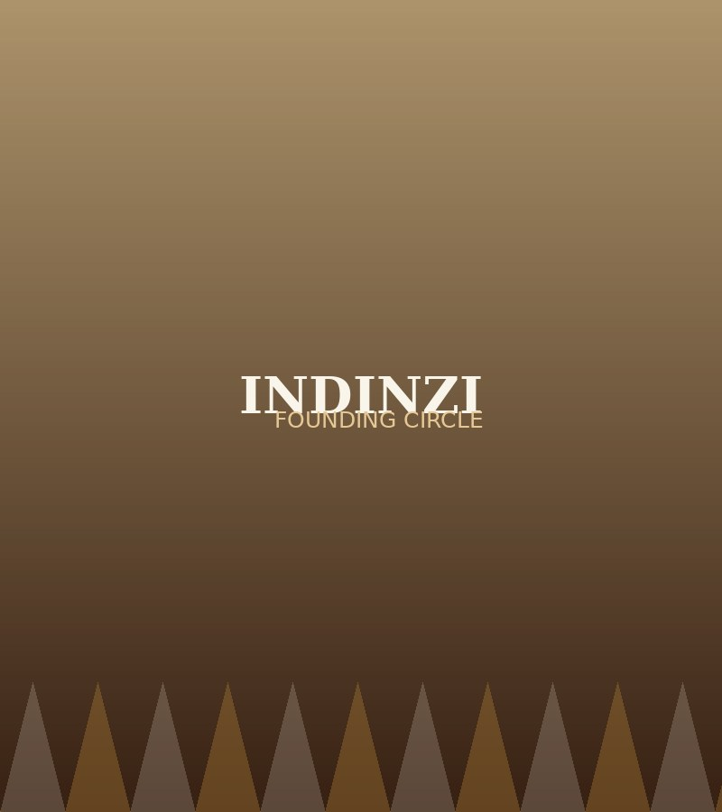

About us
Our Story - Indinzi Cultural Troupe

Who we are
We are INDINZI, a traditional dance troupe founded in 2022. Our name is derived from the Kinyarwanda verb "Kurinda", meaning "to protect". Our name reflects our mission: to protect, preserve, and share Rwandan culture through traditional dance and music.
Today Indinzi performs at national celebrations, weddings, corporate events and festivals. Always with the same goal: make sure the culture is not just remembered, but actively lived.
Our Journey
Youth-Driven
We are composed of 80% youth, and though we started with limited cultural knowledge, we were driven by a deep thirst to learn and contribute to our heritage.
Challenges and Growth
Starting as a young group, it was challenging, but our passion for our culture pushed us to grow. We committed ourselves to learning, not only for our own development but also to share and teach Rwandan culture to those who may not know it.
Communicating Globally
We aim to reach out to more people all over the world, from Rwandans in the diaspora to anyone who loves our culture or wishes to learn more about it. Our mission is to make the beauty of Rwandan traditions accessible and appreciated by everyone, regardless of where they are or where they come from.
What drives us
Our Mission and Vision
Youth-Driven
We are composed of 80% youth, and though we started with limited cultural knowledge, we were driven by a deep thirst to learn and contribute to our heritage.
Challenges and Growth
Starting as a young group, it was challenging, but our passion for our culture pushed us to grow. We committed ourselves to learning, not only for our own development but also to share and teach Rwandan culture to those who may not know it.